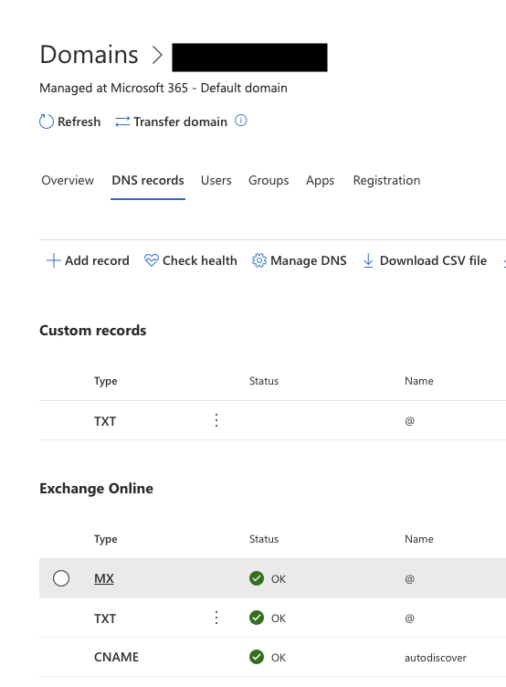
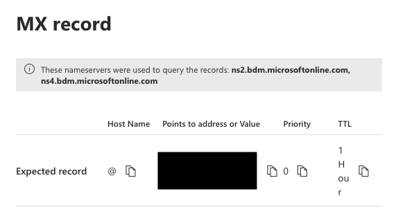
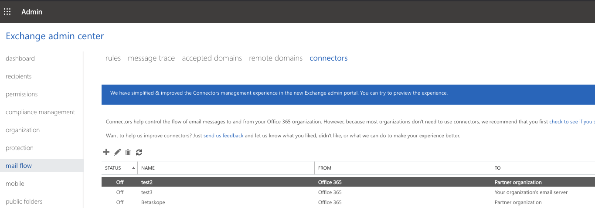
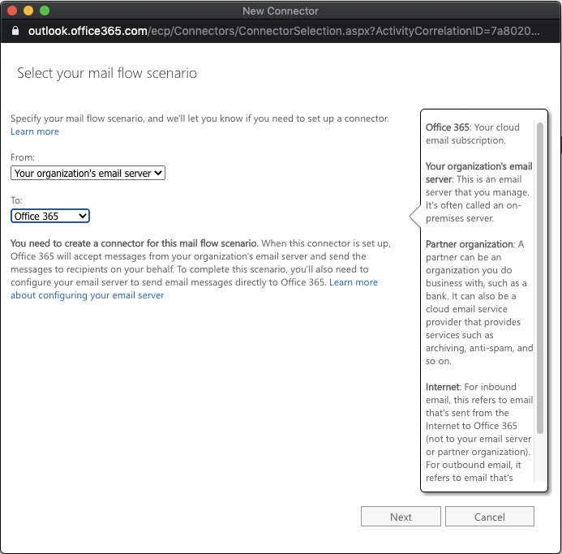
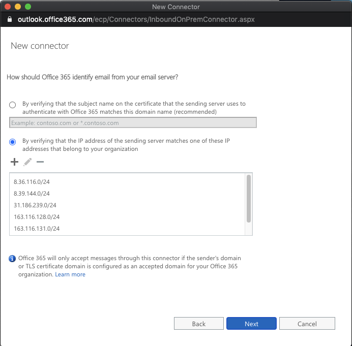
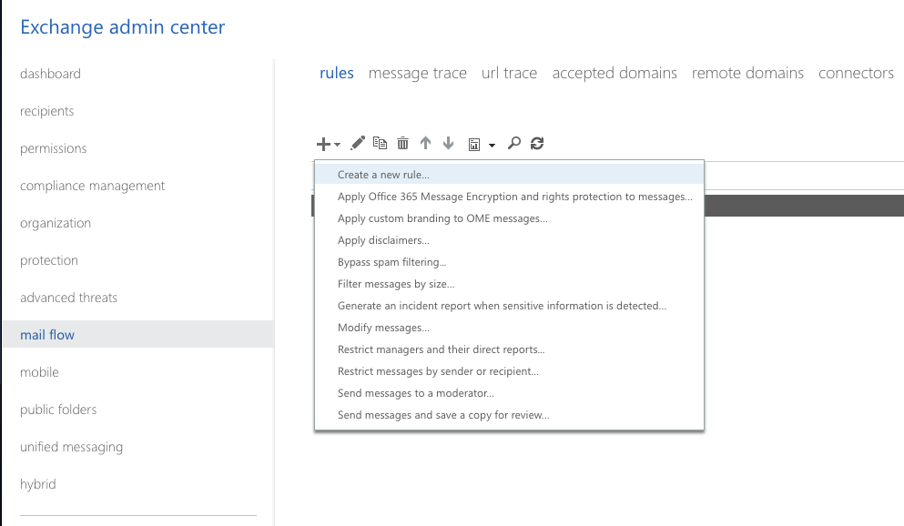
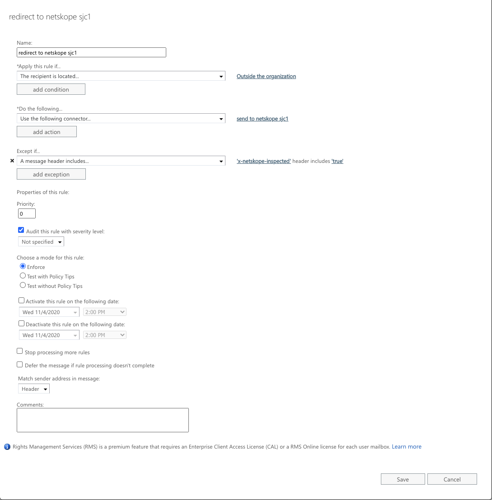
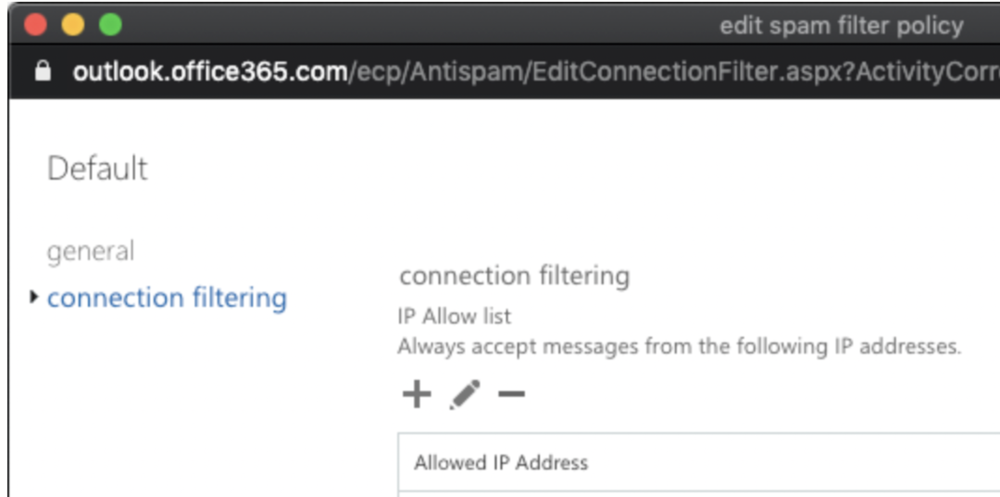

Send traffic from Netskope back to Exchange
If you are not using a third-party MTA, then you can configure Exchange to enable Netskope to send the traffic back to the Exchange server. The following flow diagram provides an overview of the loopback solution.
To enable Netskope to send the traffic back to the Exchange server, you must configure the following:
In your Netskope tenant, configure Exchange as the next hop. For detailed instructions, see Configure the Microsoft O365 Exchange server as the Next Hop in the Netskope tenant.
In Microsoft Exchange admin center, configure the following:
Outbound connector which sends all outgoing emails from Microsoft O365 Exchange to Netskope SMTP Proxy. For detailed instructions on configuring the outbound connector, see "Configure Netskope SMTP Proxy as an outbound connector in Microsoft's Exchange admin center" in Configure Netskope SMTP Proxy with Microsoft O365 Exchange.
Inbound Connector which accepts traffic from Netskope SMTP Proxy. For detailed instructions on configuring the inbound connector, see Configure an inbound connector in Microsoft's Exchange admin center.
Rule to enable the outbound connector and ensure that email traffic that has been inspected by Netskope and sent to Exchange is not resent to Netskope causing an infinite loop. The rule checks for x-netskope-inspected: true in the SMTP header. If the header is not present, then then the traffic is not sent to Netskope SMTP proxy. For an example of a rule to set up with an outbound connector, see Example of a rule set up with an outbound connector.
Protection to allow Exchange to accept traffic from Netskope SMTP Proxy server IP addresses. For detailed instructions on configuring protection, see Configure Exchange to allow Netskope SMTP Proxy server IP addresses.
Configure the Microsoft O365 Exchange server as the Next Hop in the Netskope tenant
Follow the instructions in "Configure the Microsoft O365 Exchange server and the upstream MTA in the Netskope tenant" section of Configure Netskope SMTP Proxy with Microsoft O365 Exchange article.
To locate the Exchange server's IP/FQDN,
In the Microsoft 365 admin center page, click ... Show All to view all the options and navigate to Settings > Domains.

Click on the default domain and select the DNS records tab.
Under Exchange Online, click MX, the MX record pane is displayed on the right side of the screen.
Copy the value under Points to address or Value and paste it in the Netskope tenant. The next hop port is 25.

Note
If you are running SPF checks on your Exchange server, then you must add the Netskope domain to your Exchange server’s DNS TXT record. To add a new TXT record,
In the Microsoft 365 admin center page, click ... Show All to view all the options and navigate to Settings > Domains.
Click on the default domain, select the DNS records tab, and click Add record.
In the Add a custom DNS record right pane, specify a name for the TXT record and specify the TXT value as
_spf.goskope.com. Click Save.
Configure an inbound connector in Microsoft's Exchange admin center
Configure an inbound connector that allows Microsoft O365 Exchange to accept traffic from Netskope SMTP Proxy.
In the Exchange admin center page, click mail flow and select connectors. Click the + icon to create a new connector.
In the New Connector window, select your mail flow. In the From field select Your organization's email server and in the To field select Office 365. Click Next.
Specify a name to identify the inbound connector and provide a description. Click Next.

In the following screen, provide the list of IP addresses of Netskope SMTP proxy servers in CIDR notation that will be sending traffic to Exchange. Click Next.
For a complete and updated list of IP addresses, see Netskope Email DLP (SMTP) List for Allowlisting.
Review your settings and click Save. The new connector is created.
Example of a rule set up with an outbound connector
Click on the rules tab and click the + icon to create a new rule.
In the new rule window, provide the following inputs:
Name: Provide a name for the rule, such as "Traffic to Netskope".
Apply this rule if...: Select The recipient is located outside the organization.
Do the following...: Select Redirect the message to the following connector. If you don't see this option, click More options... at the bottom of the new rule window.
Select the connector you want to redirect messages to, from the pop-up window.
Except if...: Click add exception and select A message header includes any of these words. Set the values to 'x-netskope-inspected' header includes 'true'.
Set the rule properties to default and click Save.

Configure Exchange to allow Netskope SMTP Proxy server IP addresses
In the Exchange admin center page, click protection and select connection filter.

Select Default and click Edit. In the edit spam filter policy window, select connection filtering.
Click the + icon to add the allowed IPs. Click Save.
For a complete and updated list of IP addresses, see Netskope Email DLP (SMTP) List for Allowlisting.